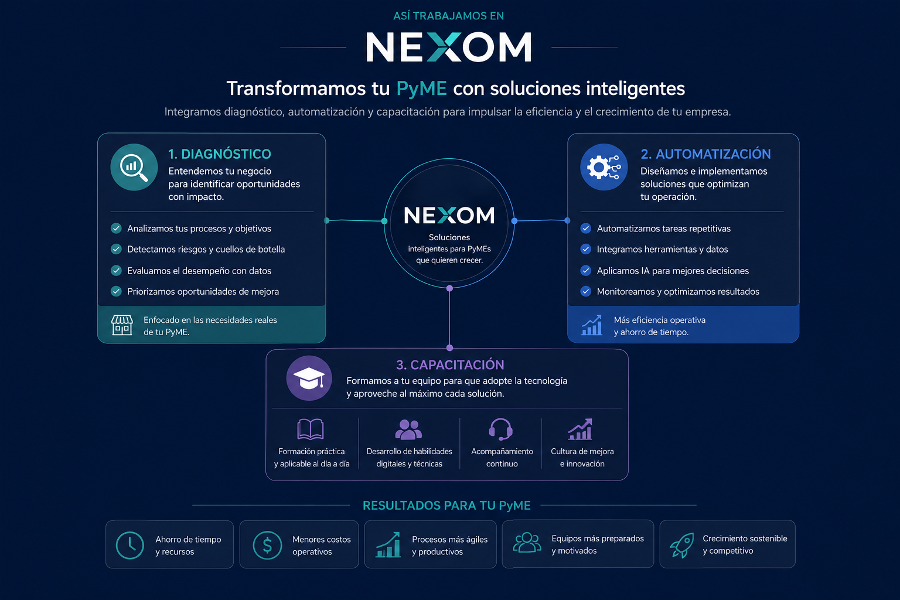

Procesos manuales
Actividades repetitivas que consumen tiempo y dependen demasiado de las personas.
Analizamos cómo trabaja tu organización, identificamos dónde la inteligencia artificial y la automatización generan valor real, implementamos la solución y preparamos a tu equipo para operarla y mejorarla.

Muchas organizaciones incorporan herramientas sin definir primero qué problema buscan resolver, cómo medirán el resultado o quién operará la solución.
Actividades repetitivas que consumen tiempo y dependen demasiado de las personas.
Conocimiento distribuido entre archivos, correos, hojas de cálculo y conversaciones.
Sistemas que no comparten información y obligan a capturar datos varias veces.
Tecnología implementada que el equipo no utiliza correctamente o abandona.
Decisiones sin datos claros sobre tiempos, costos, errores o resultados.
Soluciones que solamente puede operar o modificar el proveedor.
Una implementación adecuada de automatización e inteligencia artificial puede mejorar la productividad sin perder el control humano de la operación.
La oferta se presenta como soluciones definidas por el problema que resuelven, no como una lista genérica de tecnologías.
Identifica procesos, oportunidades, riesgos y prioridades para construir una ruta de adopción.
Agentes que responden con información autorizada, delimitan su alcance y escalan casos sensibles.
Automatización de flujos administrativos, reportes, notificaciones, validaciones y seguimiento.
Organiza el conocimiento institucional para consultar documentos, procedimientos y políticas de manera controlada.
Programas de capacitación y acompañamiento para incorporar IA y automatización al trabajo cotidiano.
Soluciones digitales cuando las herramientas existentes no cubren el requerimiento operativo.
Cada proyecto avanza por etapas para reducir el riesgo, validar el valor y evitar inversiones innecesarias.
Procesos, personas, sistemas y restricciones.
Tiempos, errores, costos y volumen.
Impacto, esfuerzo, riesgo y viabilidad.
Prototipo, piloto y criterios de aceptación.
Configuración, integración, pruebas y liberación.
Documentación, capacitación y responsables.
Indicadores, ajustes y nuevas oportunidades.
Inicia la adopción de IA mediante proyectos controlados y resultados verificables.
Transforma procesos administrativos, atención y conocimiento en capacidades digitales medibles.
Inteligencia artificial y automatización para mejorar la atención, el conocimiento institucional y la productividad académica.
Se presentan como escenarios de aplicación, no como clientes reales ni resultados ya obtenidos.
Información distribuida y atención dependiente de la disponibilidad del personal.
Agente basado en fuentes oficiales, con escalamiento y registro de consultas.
Respuestas consistentes, disponibilidad permanente y mayor trazabilidad.
Dificultad para localizar respuestas precisas en documentos extensos.
Asistente que cita la fuente y evita completar información no disponible.
Menor tiempo de búsqueda y reducción de interpretaciones incorrectas.
Concentración manual de datos desde diferentes archivos y sistemas.
Flujo automatizado para recopilar, validar, organizar y presentar información.
Menos errores, información más oportuna y mejor visibilidad.
Uso de herramientas sin criterios, metodología o controles claros.
Programa práctico por funciones, con políticas, ejercicios y evaluación.
Uso responsable, mayor productividad y menor resistencia al cambio.
La Prueba de Valor NEXOM evalúa una oportunidad específica mediante un piloto controlado, indicadores definidos y un alcance claramente delimitado.
La información utilizada ha sido validada previamente.
Se define qué puede y qué no puede realizar cada solución.
Los casos críticos pueden transferirse a responsables designados.
Se revisan permisos, accesos y tratamiento de datos.
La solución se entrega con documentación técnica y operativa.
Los indicadores se establecen antes y después de implementar.
El equipo recibe capacitación para operar y mejorar la solución.
El centro de conocimiento posiciona a NEXOM como una fuente confiable y alimenta una base documental controlada para futuros agentes de consulta.
Una ruta práctica para detectar tareas repetitivas, dependencias, riesgos y oportunidades.
Leer recurso →Conceptos, alcances y criterios para elegir la opción adecuada para cada necesidad.
Leer recurso →Tiempos, errores, volumen, calidad y adopción como línea base de un proyecto.
Abrir plantilla →